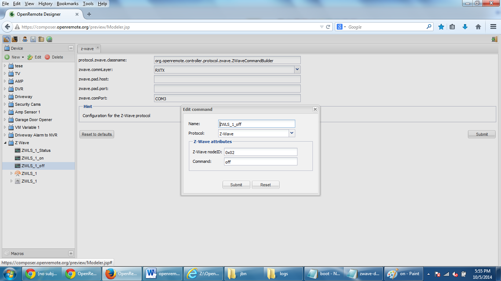
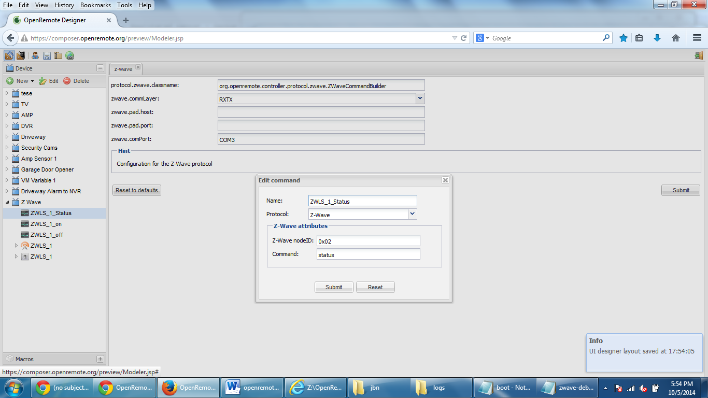
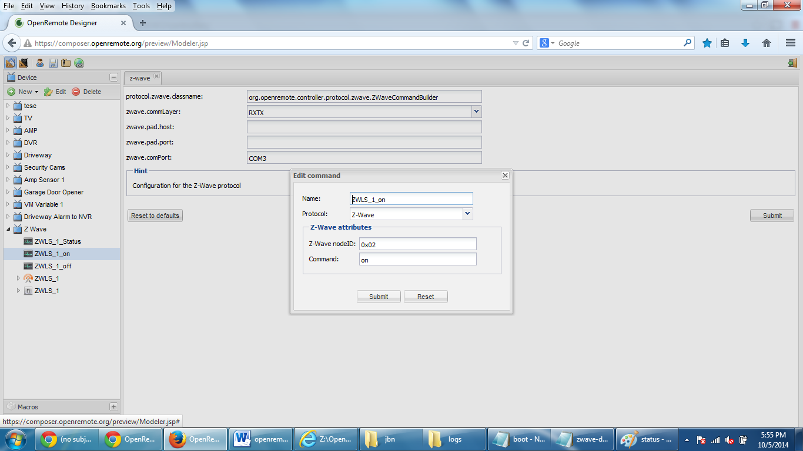
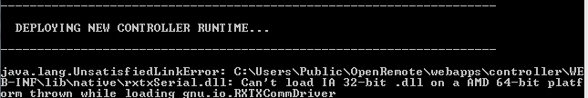

Hello all!
Having trouble configuring openremote to see my zwave devices:
Boot log:
INFO 2014-10-05 17:52:44,039 :
--------------------------------------------------------------------
DEPLOYING NEW CONTROLLER RUNTIME...
--------------------------------------------------------------------
INFO 2014-10-05 17:52:56,119 : Initialized event processor : Drools Rule Engine
INFO 2014-10-05 17:52:56,159 : Initialized event processor : RRD4J Data Logger
INFO 2014-10-05 17:52:56,160 : Initialized event processor : EmonCMS Data Logger
ERROR 2014-10-05 17:52:56,217 : Creating sensor failed. Error : Unable to create Z-Wave command, missing configuration parameter(s)
XML Element : <sensor xmlns="http://www.openremote.org" id="5573740" name="ZWLS_1" type="switch">
<include type="command" ref="2940" />
<state name="on" />
<state name="off" />
</sensor>
org.openremote.controller.exception.NoSuchCommandException: Unable to create Z-Wave command, missing configuration parameter(s)
at org.openremote.controller.protocol.zwave.ZWaveCommandBuilder.build(ZWaveCommandBuilder.java:103)
at org.openremote.controller.command.CommandFactory.getCommand(CommandFactory.java:164)
at org.openremote.controller.model.xml.Version20SensorBuilder.parseSensorEventProducer(Version20SensorBuilder.java:420)
at org.openremote.controller.model.xml.Version20SensorBuilder.build(Version20SensorBuilder.java:287)
at org.openremote.controller.deployer.Version20ModelBuilder.buildSensorObjectModelFromXML(Version20ModelBuilder.java:817)
at org.openremote.controller.deployer.Version20ModelBuilder.buildSensorModel(Version20ModelBuilder.java:663)
at org.openremote.controller.deployer.Version20ModelBuilder.build(Version20ModelBuilder.java:557)
at org.openremote.controller.deployer.AbstractModelBuilder.buildModel(AbstractModelBuilder.java:154)
at org.openremote.controller.service.Deployer.startup(Deployer.java:858)
at org.openremote.controller.service.Deployer.startController(Deployer.java:336)
at org.openremote.controller.spring.SpringContext.initializeController(SpringContext.java:109)
at org.openremote.controller.service.ServiceContext.init(ServiceContext.java:383)
at org.openremote.controller.bootstrap.Startup.loadServiceContext(Startup.java:85)
at org.openremote.controller.bootstrap.servlet.ServletStartup.initializeServiceContext(ServletStartup.java:190)
at org.openremote.controller.bootstrap.servlet.ServletStartup.contextInitialized(ServletStartup.java:109)
at org.apache.catalina.core.StandardContext.listenerStart(StandardContext.java:3843)
at org.apache.catalina.core.StandardContext.start(StandardContext.java:4342)
at org.apache.catalina.core.ContainerBase.addChildInternal(ContainerBase.java:791)
at org.apache.catalina.core.ContainerBase.addChild(ContainerBase.java:771)
at org.apache.catalina.core.StandardHost.addChild(StandardHost.java:525)
at org.apache.catalina.startup.HostConfig.deployDirectory(HostConfig.java:926)
at org.apache.catalina.startup.HostConfig.deployDirectories(HostConfig.java:889)
at org.apache.catalina.startup.HostConfig.deployApps(HostConfig.java:492)
at org.apache.catalina.startup.HostConfig.start(HostConfig.java:1149)
at org.apache.catalina.startup.HostConfig.lifecycleEvent(HostConfig.java:311)
at org.apache.catalina.util.LifecycleSupport.fireLifecycleEvent(LifecycleSupport.java:117)
at org.apache.catalina.core.ContainerBase.start(ContainerBase.java:1053)
at org.apache.catalina.core.StandardHost.start(StandardHost.java:719)
at org.apache.catalina.core.ContainerBase.start(ContainerBase.java:1045)
at org.apache.catalina.core.StandardEngine.start(StandardEngine.java:443)
at org.apache.catalina.core.StandardService.start(StandardService.java:516)
at org.apache.catalina.core.StandardServer.start(StandardServer.java:710)
at org.apache.catalina.startup.Catalina.start(Catalina.java:578)
at sun.reflect.NativeMethodAccessorImpl.invoke0(Native Method)
at sun.reflect.NativeMethodAccessorImpl.invoke(NativeMethodAccessorImpl.java:39)
at sun.reflect.DelegatingMethodAccessorImpl.invoke(DelegatingMethodAccessorImpl.java:25)
at java.lang.reflect.Method.invoke(Method.java:597)
at org.apache.catalina.startup.Bootstrap.start(Bootstrap.java:288)
at org.apache.catalina.startup.Bootstrap.main(Bootstrap.java:413)
INFO 2014-10-05 17:52:56,308 : Registered sensor : Sensor (Name = 'jbn_amp_sensor', ID = '5115622', State Mappings:
INFO 2014-10-05 17:52:56,308 : Registered sensor : Sensor (Name = 'jbn_dw_sensor', ID = '5109957', State Mappings:
INFO 2014-10-05 17:52:56,308 : Registered sensor : Switch Sensor (Name = 'VM 1 Sensor', ID = '5572362')
INFO 2014-10-05 17:52:56,311 : Startup complete.
INFO 2014-10-05 17:52:56,312 : Controller Definition File Watcher for Default Deployer started.
ZWave Log:
DEBUG 2014-10-05 17:53:57,087 (Z-Wave): Building Z-Wave command
DEBUG 2014-10-05 17:53:57,087 (Z-Wave): Z-Wave command: command = on
DEBUG 2014-10-05 17:54:17,030 (Z-Wave): Building Z-Wave command
DEBUG 2014-10-05 17:54:17,030 (Z-Wave): Z-Wave command: command = on
DEBUG 2014-10-05 17:54:24,138 (Z-Wave): Building Z-Wave command
DEBUG 2014-10-05 17:54:24,138 (Z-Wave): Z-Wave command: command = on
ZWave-Debug Log:
DEBUG 2014-10-05 17:53:57,087 (Z-Wave): Building Z-Wave command
DEBUG 2014-10-05 17:53:57,087 (Z-Wave): Z-Wave command: command = on
DEBUG 2014-10-05 17:54:17,030 (Z-Wave): Building Z-Wave command
DEBUG 2014-10-05 17:54:17,030 (Z-Wave): Z-Wave command: command = on
DEBUG 2014-10-05 17:54:24,138 (Z-Wave): Building Z-Wave command
DEBUG 2014-10-05 17:54:24,138 (Z-Wave): Z-Wave command: command = on
Settings:
Off Command:

Status Command:

On Command:

You can also see in the background that the COM3 port is set as well as the RXTX for the ZWave Controller Config
Can interface the switch via Zsend and OZWForm and turn the switch on and off successfully. Pretty sure I'm just missing something with the setup between the Aeon stick and openremote.
I have followed the attached step by step and have synced the controller as well:
http://www.openremote.org/display/docs/OpenRemote+2.0+How+To+-+Z-Wave
Any help would be greatly appreciated.
Jeremy
{kind=link}
{kind=link}
{kind=link}
{kind=link}
{kind=link}
|
I think that hexadecimal for Z-Wave node ID's is not supported. Instead of 0x02 use 2 for the node ID. |
|
I will give it another try. Ended up with hex since the decimal kept returning "node not found" Guessing at node names since the logs have no node nomenclature in them. Not sure how to make that happen. |
|
Changing to 2 gets me this: ERROR 2014-10-06 06:13:53,268 : Creating sensor failed. Error : The node '2' is not known by the Z-Wave controller Any other thoughts? |
This means that your Z-Wave network does not contain a Z-Wave device with the node ID '2'. |
|
Thanks for the reply. Both Zsend and OZWForm refer to that particular zwave switch as Node 2. How do I determine what openremote thinks the node name is? Setting the log4j.properties to DEBUG did not produce what I needed in the zwave or zwave-debug log files. Again, thanks for the guidance. |
|
OK - I could imagine that the serial port is not properly configured. The Z-Wave stack tries to retrieve the node ID list from the Z-Wave interface (Aeon Z-Stick). If this request fails, the node ID list is empty and you'll see the message "The node '2' is not known by the Z-Wave controller" when the command is created. Are there any log entries indicating that there is something wrong with the serial communication ? |
|
I will need to look...which log files should I be searching through? If it helps, the serial communication works flawlessly with Zsend and OZWForm as I can find all the nodes and execute on off commands through them. |
|
Sooo...I figured out what the problem was: The file ..\OpenRemote\webapps\controller\WEB-INF\lib\native\rxtxSerial.dll was a 32 bit dll. I'm using Windows 7 64bit. I just happened to see this error:  I googled rxtxSerial.dll 64bit and found the following link: http://www.java2s.com/Code/Jar/r/Downloadrxtxnativewindowsjar.htm Extracted the 64 bit dll and renamed it to the original file rxtxSerial.dll, launched Openremote and now my ZWave logs work...Node names work...and my ZWave switches work. Looks like we need to add OS specific downloads to the ZWave How To perhaps? |
|
i am running into the same issue, this is rather poor that we download their software and they dont care or ask what |
|
Have you linked the controller in the designer? Do you see on the controller syncing page "This controller is linked to account ID: ..." ? |
|
yeah, i linked everything up, i got the mac address in the controller, put that in the designer, i got i hope they reply better when we are out the holiday season as i much prefer to be positive about |
|
Please wait few days more. The developer of this feature will be back next week. |